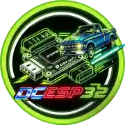
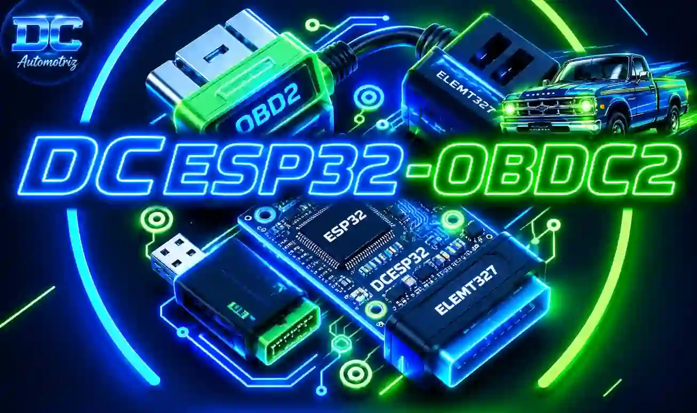

Panel automotriz
RPM y velocidad en medidores circulares, con temperatura del refrigerante, voltaje, marcha y estado de conexión.

DC AUTOMOTRIZLaboratorio · diagnósticoElectrónica automotriz · ESP32 · OBD-II
DCESP32-OBDC2 convierte un ESP32 y un adaptador ELM327 Bluetooth en un tablero local para explorar datos del vehículo, códigos DTC y lecturas en tiempo real.

Hecho para el taller
El firmware conserva las rutas de la versión base y suma una página web rediseñada para consultar lecturas con claridad.
RPM y velocidad en medidores circulares, con temperatura del refrigerante, voltaje, marcha y estado de conexión.
Vista comparativa y gráficas individuales de hasta cuatro sensores seleccionados.
Consulta DTC y lectura de VIN desde los endpoints disponibles del firmware.
Guarda muestras recibidas y eventos DTC localmente, sin inventar kilometraje ni consumo.
Configura opciones expuestas por la interfaz y restablece la configuración cuando sea necesario.
La auditoría incluida compara las llamadas de la página con las rutas HTTP registradas en el sketch.
Inicio rápido
Compila el sketch, carga el firmware y conéctate al punto de acceso local del ESP32.
DC-OBD, entra a http://192.168.4.1.Transparencia primero
La documentación distingue las comprobaciones en software de las pruebas que requieren un auto y hardware reales.